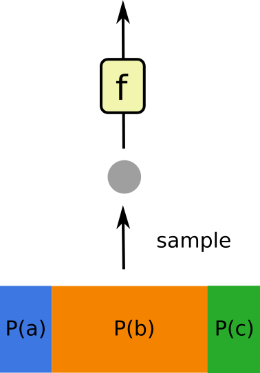
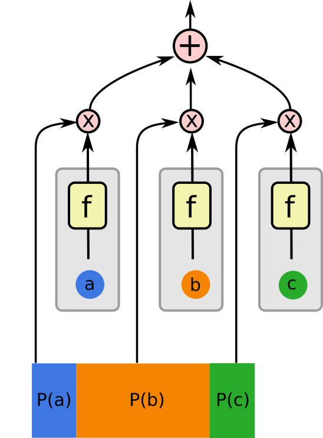
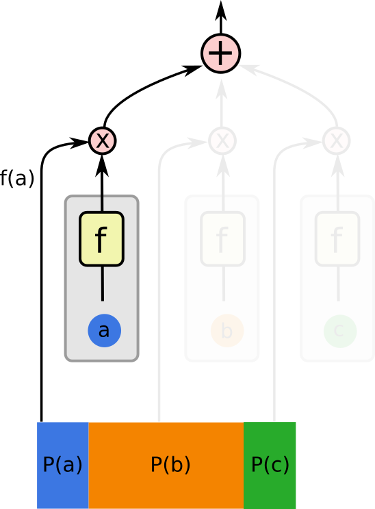

Reinforcement Learning
DeepIntro
Overview
- Introduction
- Policy Value Methods
- Policy Gradient Methods
What is RL?
What is RL?
- Learning by Exploration
- Evaluative Feedback
Agent-Environment Interface

(Sutton & Barto, 1998)
Function Approximators
Function Approximator Abstraction
- Evaluate: \(~~~f(x)\)
- Update: \(~~~~~f(x) ~⇜~ y\)
Tabular Environments/Approximators
Policy Value Methods
What is value?
Long-Term
What is value?
Time Discounted Reward
$$R = \sum_t \gamma^t r_t$$
Policy Value Iteration
Policy Value Iteration : Cliff Walking
Value \(\to\) Policy
- Exploration
- Epsilon-Greedy Policies
Learning Value from Experience
Monte-Carlo Learning
Value of state is average return.
Monte-Carlo Learning
$$V(s_t) ~⇜~ R_t~~~~~~~~~~~~$$
$$V(s_t) ~⇜~ \sum_i \gamma^i r_{t+i}$$
Temporal Difference Learning
Merge paths for greater statistical efficiency.
Temporal Difference Learning
$$V(s_t) ~⇜~ r_t + \gamma V(s_{t+1})$$
Q functions
State-Action Values
Easier to make policies
MC and TD still work.
Monte-Carlo Learning for \(Q(s,a)\)
$$Q(s_t, a_t) ~⇜~ R_t$$
TD Learning for \(Q(s,a)\) (SARSA)
$$Q(s_t, a_t) ~⇜~ r_t + \gamma*Q(s_{t+1}, a_{t+1})$$
On-Policy vs Off-Policy
TD can be rewritten as:
$$Q(s_t, a_t) ~⇜~ r_t + \gamma V(s_{t+1})$$
$$V(s) = Q(s,a) ~~ \text{where} ~~ a \sim \pi(a|s) $$
TD can be rewritten as:
$$Q(s_t, a_t) ~⇜~ r_t + \gamma V(s_{t+1})$$
$$V(s) = \sum_a \pi(s,a) Q(s,a)$$
Estimating the value under present policy
Could also use a different policy \(\pi'\)
$$Q(s_t, a_t) ~⇜~ r_t + \gamma V(s_{t+1})$$
$$V(s) = \sum_a \pi'(s,a) Q(s,a)$$
Q-learning: off-policy optimal
$$Q(s_t, a_t) ~⇜~ r_t + \gamma V(s_{t+1})$$
$$V(s) = \max_a Q(s,a)$$
Problem: Overconfidence of Q-learning
Solution: double Q-learning
Problem: TD and function approximators
Solution: traces?
See the Interactive RL Vis
Policy Gradient Methods
REINFORCE
Backprop through sampling
(avoid where possible!)



REINFORCE = A Tug of War
Got to make it fair; divide by prob.
REINFOCE
REINFOCE on GridWorld
REINFOCE with Baseline
Actor Critic Models
Policy Gradients + Value Functions
Using Value Functions
- Get rid of noise from future actions
- Baseline
- Gradient (continuous action spaces)
Advantage actor critic
Advantage: \(~~~~Q(s,a) - V(s)\)